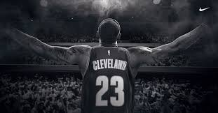
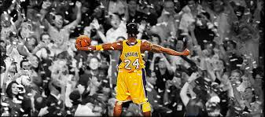
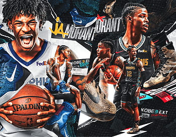
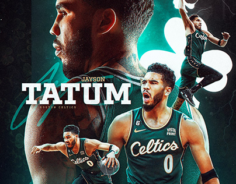

Today best bassketballer is Lebron James he have 40000+ points,he is also 6.9 height and he is 40+ age. I really respect Lebron
Kobe Bryant was a magican,he can do anything in basketball just like:dunk,layup and three point shot.He was 6.6 height.Kobe also passed away with points Michael Jordan,Kobe had 33643points and Michael Jordan had 32292.Kobe passed away in 2020,with her daughter and his friend.He had a crash with helicopter.Rest in peace Black Mamba.
Ja Morant is great dunker,he is 6.2 height and also very young.Ja is 24years old,today Ja have problems just like his injurys.I have hope he becomes healthy and become great basketball player
Jayson Tatum is my 3rd favorite basketballer,he is 6.8 height.he is great 3point shooter and also a great dunker in my option,he is also 26 years old.
